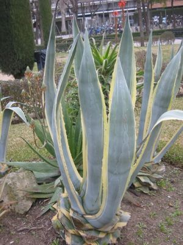
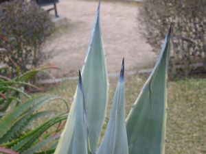

Flora ornamental del Campus de Reina Mercedes, Universidad de Sevilla - Ficha nº 61 - Versión 1
|
Agave
|
|
|
Pita,
ágave, maguey (en México) |
Planta
crasa |
|
Planta
crasa, acaule con roseta de
hojas basales.
Flores
unisexuales,
con
6 tépalos, tubulares, de color amarillo-verdoso, con
6 estambres en
dos verticilos trímeros que sobresalen del periantio
o 3 carpelos
soldados; ovario ínfero, estilo largo, primordios
seminales numerosos. |

Fotos:
David Moyano Parra 2007 |
|

|
Observaciones.- Agave significa maravilla en griego y al parecer fue denominada así por los conquistadores españoles. Americana por su lugar de origen. Se multiplica de forma muy activa vegetativamente. |
|
Área de Origen.- Procede de
México.
|
|
|
Uso en el
campus.- En
rocallas decorativas. Debido a su ciclo de vida,
relativamente corto, su esistencia y situación en el
Campus puede cambiar de un año a otro. |
Localización.- Hay dos
rocallas con
pitas en las parcelas Oeste y Sur del Jardín
Central y otra
más en la ETSI
Informática. |
|
Autores: David Moyano Parra (2006) y Carlos Romero Zarco (2007) |
|